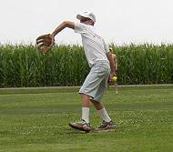
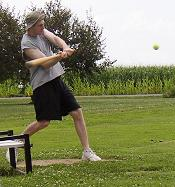
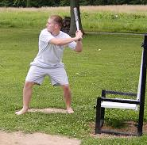
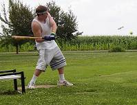
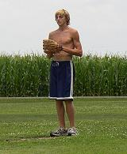
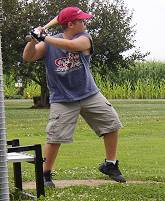
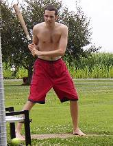

Tony Cork picked up his first loss of the year despite allowing just 6 hits and 3 runs. Cork was 4-for-16 at the plate on the day as well. |

Chris Cork sent the second game to extra innings with his 2-run, game-tying homer in the bottom of the 9th inning. In his first action this year, Cork was 10-for-28 with 2 homeruns and 3 RBI on the day. |

Josh Williamson busted out of his slump with a 3-for-10 effort in game one including a solo homer. |

Dustin Waldrop finished the doubleheader 7-for-25 at the plate, but did his best work on the mound in game number two. Waldrop went 12 innings allowing just 2 runs, and tallied 4 outfield assists. |

Robert Trimble moved to 2-0 on the year as he allowed 2 runs on 8 hits in the opening game of the doubleheader. |

Evan Woodard made his chair baseball debut in the second game of the doubleheader and finished 4-for-17. |
|

Patrick Cork struggled at the plate going just 8-for-29 on the day, but kept his team in the game in the nightcap pitching 12 innings and allowing 2 runs on 8 hits. |
|